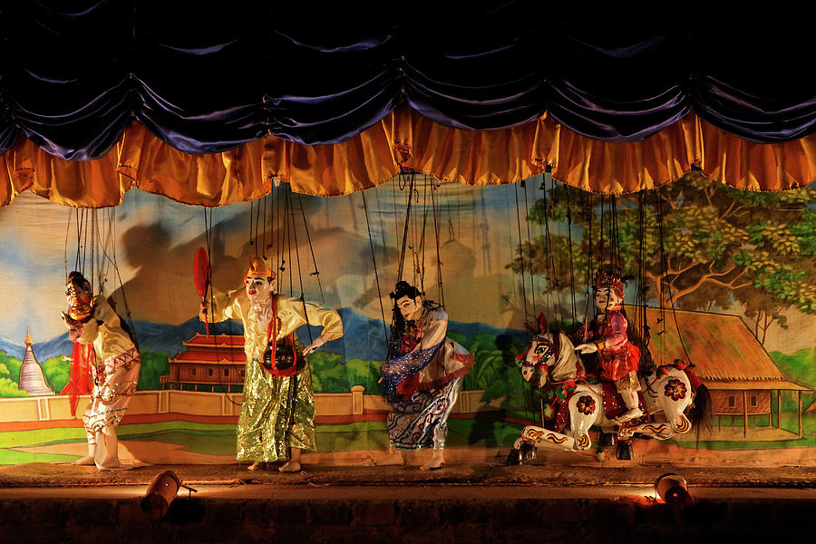
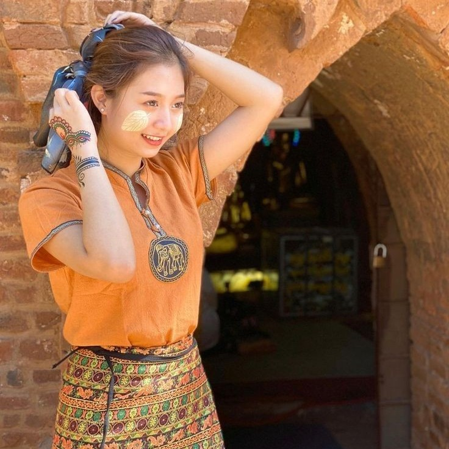

Things to Do in Bagan
Exploring Temples
Exploring the temples in Bagan is an incredible experience! With over 2,000 temples spread across the landscape, each one has its own unique architecture and history. Don't miss catching a sunrise or sunset from one of the elevated temples for breathtaking views of the plains dotted with ancient structures. And be sure to visit some of the lesser-known temples for a more intimate and serene experience away from the crowds.
Visit Shwezigon Pagoda
The most famous pagoda in Bagan is probably the Shwezigon Pagoda. It's a significant religious site and a prime example of Burmese temple architecture. Its golden stupa, elegant design, and historical importance make it a must-visit for tourists exploring the temples of Bagan.
Visit Ananda Temples
The Ananda Temple in Bagan, is a masterpiece of Mon architecture and one of the most revered temples in the region. Built in the 12th century, it's known for its exquisite design. The temple's symmetrical layout, gilded spires, and four standing Buddhas facing the cardinal directions make it a significant pilgrimage site for Buddhists.
Hot Air Balloon Ride
Experience the magic of Bagan from above with a hot air balloon ride. It offers a unique perspective of the temples and the surrounding landscape.
Attend a Traditional Puppet Show
Immerse yourself in Myanmar's culture by attending a traditional puppet show. It's a colorful and entertaining experience.
Explore Local Markets
Wander through the bustling markets of Bagan to experience the local way of life and sample delicious street food.
Take a Cooking Class
Learn to cook authentic Burmese dishes with a cooking class. It's a fun way to learn about the local cuisine and bring a taste of Myanmar back home with you.
Cruise on Irrawaddy River
Relax on a boat cruise along the Irrawaddy River and enjoy the scenic views of the riverbanks dotted with temples and villages.
Relaxation and Wellness
Unwind with a traditional Myanmar massage or indulge in a yoga session to rejuvenate your body and mind amidst the serene surroundings of Bagan.
Wearing traditional Burmese dress
Wearing traditional Burmese dress while exploring the ancient temples of Bagan creates a captivating fusion of past and present. As the vibrant colors of the longyi and htamein sway with each step, visitors become living embodiments of Myanmar's rich cultural heritage amidst the timeless splendor of the archaeological wonders that dot the landscape. The elegance of the traditional attire complements the serene beauty of Bagan's temples, offering a harmonious blend of tradition and adventure for those who wander its hallowed grounds.